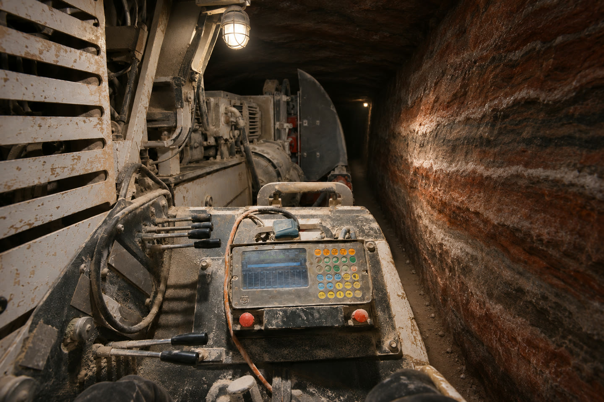

- Комбайн
- Работает
- Маслостанция
- Включена
- Пробный пуск
- Не выполнялся
Пульт управления
Отличная работа! Вы прошли обе смены и в каждой верно решили, можно ли зайти за щит.

Отличная работа! Вы прошли обе смены и в каждой верно решили, можно ли зайти за щит.